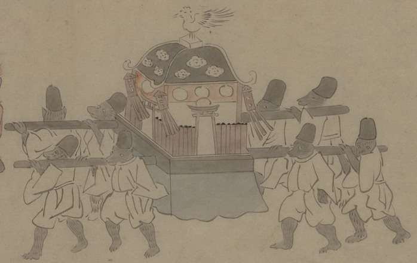

神輿をかつぐ化物たち。8体とも獣の変化と見られ、全身が黒い毛皮で覆われている。烏帽子をかぶり、浄衣を着ている。
出典：親書誌：U426_nichibunken_0150：付喪神絵詞；ツクモガミエコトバ／日付：2010／資源識別子：U426_nichibunken_0150_0061_0000
Copyright (c)2010- International Research Center for Japanese Studies, Kyoto, Japan. All rights reserved.